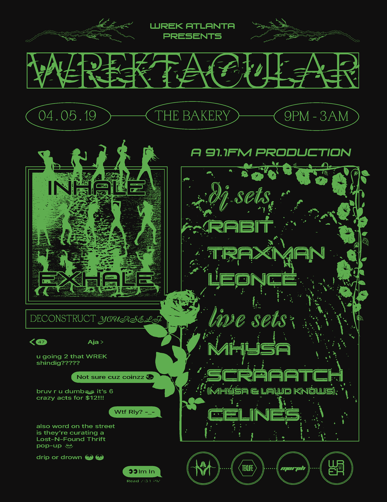
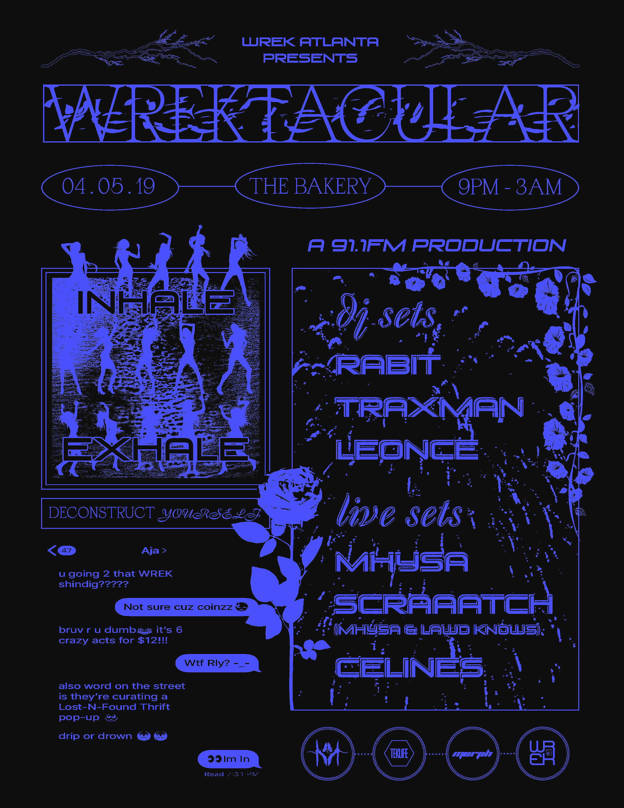

From self-taught screenprinting to zine-making to creative coding meshing raw DIY ethics with modern software to create wacky works is our goal.
Inspired by electronic music scenes brutalist websites silly 90's/00's nostalgia archival instagram accounts anything we find unconventionally crazy!
Members meet on a weekly basis to teach each other new skills & share odd yet refreshing inspirations.
Power in Print Zine
cover & 2 spreads i made for a 30-page zine project i headed and organized. 3rd spread curated by my friend yasmine.
each collective member contributed 1 spread to the zine. we printed 150+ copies and binded each by hand. the cover features a pair of jeans we screenprinted wrek logos onto.
passed out for free at our annual station-run concert.

WREKtacular 2019
promotional posters and videos i made for our annual station-run concert. printed out and plastered across several atlanta shops & venues.
 50th Anniversary Zine
4 spreads for a 20-page zine celebrating the station's 50th anniversary. all spreads done by me. all copies binded by hand. passed out for free at our 50th anniversary 2-day music festival.
in addition, i curated & installed an art exhibit for the festival celebrating some of my favorite artists from the local atlanta community.
College Radio Day
posters for 2018 college radio day. printed out for our college radio day tabling event.
collective members were tasked with creating at least one promotional material for the event.


Specialty Show Promos
instagram promos for some of our station's staff picks & genre-specific shows.
shows were put on an advertising queue and collective members were tasked with making promotional content for assigned shows.
Screenprinting
i headed and organized screenprinting workshops/socials for collective members. we had no prior experience & self-taught ourselves through youtube tutorials.


Miscellaneous
one of the collective members lent me their t-shirt printing press. the first is a proposed wrek t-shirt design, the second is a birthday shirt i made for my grandma.